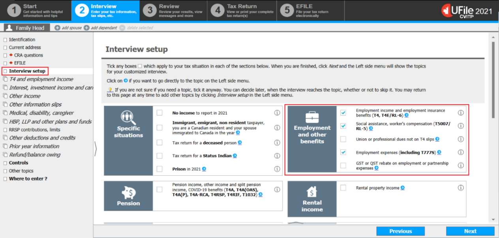
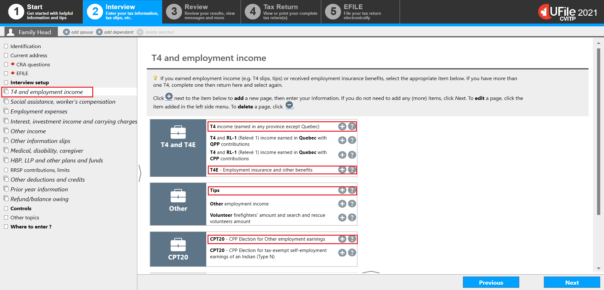
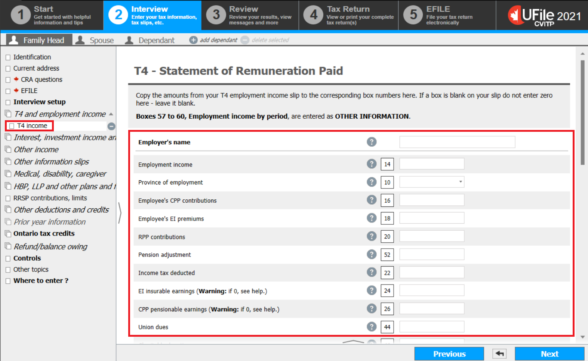
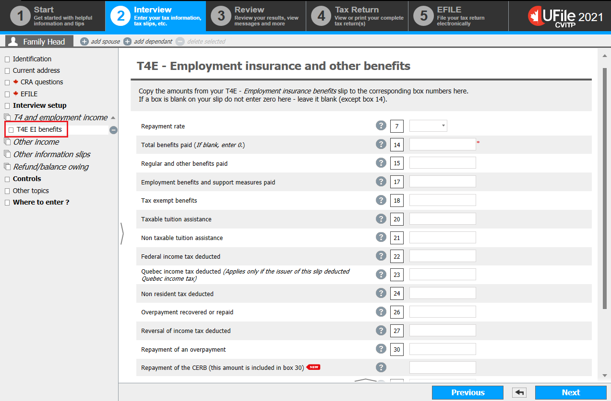
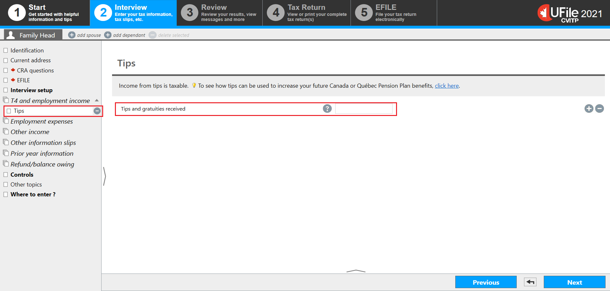
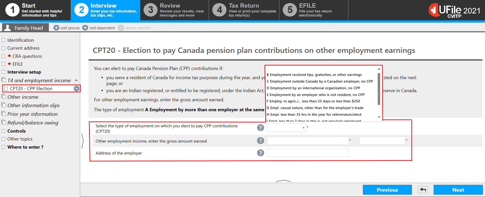
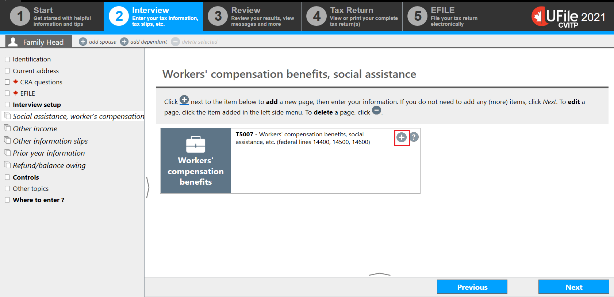
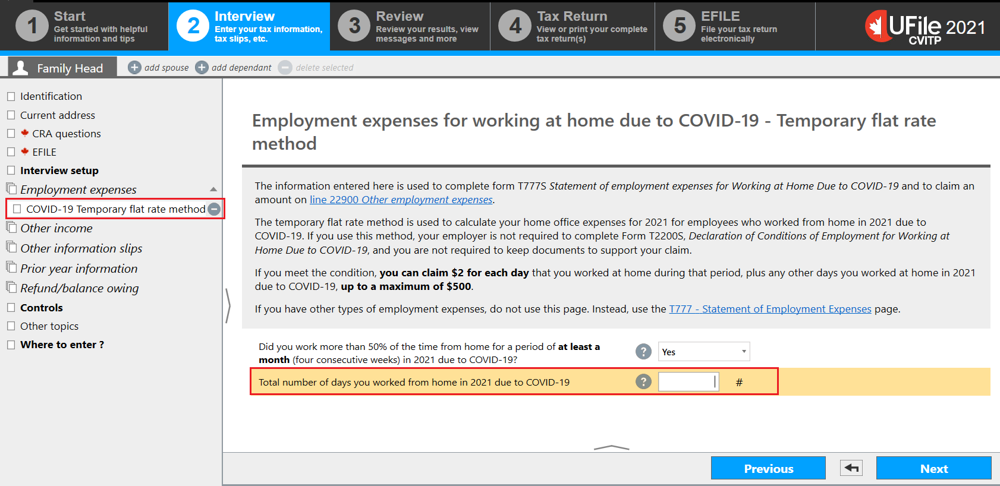

Interview setup
Text version of this screenshot
UFile screen
Under Interview tab
Family Head sub-tab
Interview setup topic is highlighted
Employment income and other benefits section is highlighted
- select Interview setup from the left-side menu
T4 and employment income
Text version of this screenshot
UFile screen
Under Interview tab
Family Head sub-tab
T4 and employment income topic is highlighted
T4 and employment income page
T4 income (earned in any province except Quebec) is highlighted
T4E – Employment insurance and other benefits is highlighted
Tips is highlighted
CPT20 – CPP Election for Other employment earnings is highlighted
T4 - Statement of Remuneration Paid
Text version of this screenshot
UFile screen
Under Interview tab
Family Head sub-tab
T4 income topic is highlighted
T4 – Statement of Remuneration Paid section is highlighted
- enter the individual’s employer into the Employer’s name field
- enter the amounts from the individual’s T4 slip to the corresponding fields
If box 24 and/or box 26 of a T4 slip are blank, do not enter 0 in the tax software; leave the fields blank.
Instructions for a Status Indian
- scroll down to OTHER INFORMATION to select Box 71 and to make additional CPP contributions on tax exempt income
T4 box 71 and additional CPP contributions on tax exempt income

Text version of this screenshot
UFile screen
Under Interview tab
Family Head sub-tab
T4 income topic
Exempt (CPP/QPP, EI, PPIP) (Warning: If exempt, see help.) is highlighted
Other information section with Box 71 – Indian (exempt income) – Employment selected from drop-down menu is highlighted
Complete this section if you elect to pay Canada Pension Plan (CPP) contributions section is highlighted
- verify box 28 on the T4 slip and make a selection from the drop-down menu
- select Box 71 from the OTHER INFORMATION drop-down menu
- to make additional CPP contributions on the income from box 71:
- select M Empl. Indian registered under the Indian Act from the drop-down menu
- enter the amount on which they wish to make additional CPP contributions
- enter the Address of the employer
- click Next
T4E – Employment insurance and other benefits
Text version of this screenshot
UFile screen
Under Interview tab
Family Head sub-tab
T4E EI benefits topic is highlighted
T4E - Employment Insurance and other benefits page
- enter the amounts from the T4E into the matching fields in the tax software
- if the individual repaid COVID-19 benefits:
- enter the total of the following amounts into the Repayment of an overpayment field:
- EI repayments
- CERB repayment amount the individual wishes to claim for 2022
- enter the CERB repayment amount for 2022 into the Repayment of the CERB (this amount is included in box 30) field
- enter the total of the following amounts into the Repayment of an overpayment field:
This amount is included in a letter received by the individual from Service Canada.
Tips or gratuities
Text version of this screenshot
UFile screen
Under Interview tab
Family Head sub-tab
Tips topic is highlighted
Tips page
Tips and gratuities received is highlighted
- enter the total for tips and gratuities received during the year, that are not included on their T4 slip(s)
- click Next
Election to make additional CPP contributions
Text version of this screenshot
UFile screen
Under Interview tab
Family Head sub-tab
CPT20 – CPP Election topic is highlighted
CPT20 – Election to pay Canada pension plan contributions on other employment earnings page
Select the type of employment on which you elect to pay CPP contributions (CPT20) is highlighted
Other employment income, enter the gross amount earned is highlighted
Address of the employer is highlighted
The drop-down menu is highlighted
- select B Employment received tips, gratuities, or other earnings from the Select the type of employment on which you elect to pay CPP contributions (CPT20) the drop-down menu
- enter, in order, the type of income (In this case, Tips), and the gross amount earned that the individual wants to make additional CPP contributions for into the Other employment income, enter the gross amount earned fields,
- enter the individual’s employer into the Address of the employer field
- click Next
If the individual has more than one employer to input, click T4 and employment income in the left-side menu and click the + sign next to CPT20 – CPP Election for Other employment earnings to enter an additional employer. Each employer must be added separately.
Workers' compensation benefits, social assistance
Text version of this screenshot
UFile screen
Under Interview tab
Family Head sub-tab
Social assistance, worker’s compensation topic
Workers’ compensation benefits, social assistance page
Plus sign is highlighted next to T5007-Workers’ compensation benefits, social assistance, etc. (federal lines 14400, 14500, 14600)
- click Social assistance, worker’s compensation in the left-side menu
- click the + sign next to T5007- Worker’s compensation benefits, social assistance, etc. (federal lines 14400, 14500, 14600)
T5007 – Statement of benefits

Test version of this screenshot
UFile screen
Under Interview tab
Family Head sub-tab
T5007 benefits topic
T5007 – Statement of benefits page
Box 11 – social assistance payments or provincial or territorial supplements is highlighted
- enter the amounts from the T5007 into the matching fields
- if you entered an amount in field 11, select the applicable response from the Did you live with your spouse or common-law partner when you received the social assistance benefits? drop-down menu
- if Yes was selected, select the person whose name is found on theslip
Employment expenses

Text version of this screenshot
UFile screen
Under Interview tab
Family Head sub-tab
Employment expenses topic is highlighted
Employment expenses page
T777S – Employment expenses for Working at Home Due to COVID-19 – Temporary flat rate method is highlighted
- click Employment expenses in the left-side menu
- click the + sign next to T777S – Employment expenses for Working at Home Due to COVID-19 – Temporary flat rate method
Employment expenses for working at home due to COVID-19
Text version of this screenshot
UFile screen
Under Interview tab
Family Head sub-tab
COVID-19 Temporary flat rate method topic is highlighted
Employment expenses for working at home due to COVID-19 – Temporary flat rate method page
Total number of days you worked from home in 2021 due to COVID-19 is highlighted
- select Yes from the Did you work more than 50% of the time from home for a period of at least a month (four consecutive weeks) in 2022 due to COVID-19? drop-down menu
- enter the Total number of days you worked from home in 2022 due to COVID-19